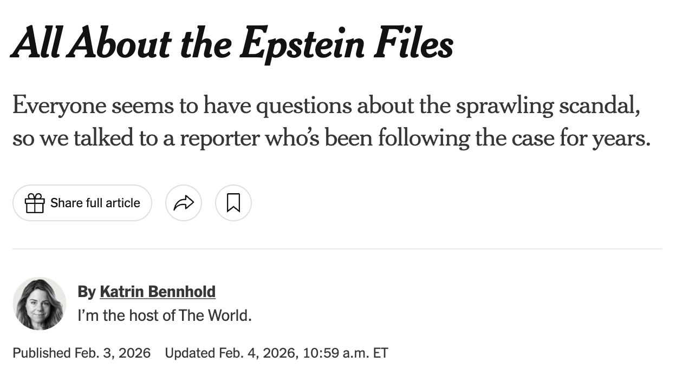

The Epstein Files Latest Release Powerful Men in Files Relationships With Leaders References to Trump Epstein’s Inner Circle Victims’ Names Disclosed
The Epstein Files Latest Release Powerful Men in Files Relationships With Leaders References to Trump Epstein’s Inner Circle Victims’ Names Disclosed

Everyone seems to have questions about the sprawling scandal, so we
talked to a reporter who’s been following the case for years.
The case of Jeffrey Epstein, the wealthy sex offender with links
to President Trump and a vast number of other rich and powerful
figures in the U.S. and beyond, has made headlines for years.
Everyone knows about it.
But the case presents such a sprawling scandal that it feels hard
to wrap your arms around. Who was involved — and what does “involved”
mean anyway? These are some of the questions I’m hearing at the
school gates and at dinner parties.
So I called up my colleague Matthew Goldstein, who has been covering
the story since 2019, when Epstein was indicted and arrested in New
York on federal charges of sex trafficking and died by suicide.
You can read our conversation below.
Jon Elswick/Associated Press
What we know about the Epstein files
So, Matt: Last November, Congress passed a law obliging the Trump
administration to release its files on Jeffrey Epstein. What
exactly are these Epstein files? Are there more? Where does this end?
The Epstein files, broadly speaking, are everything that prosecutors
have accumulated since Epstein first came into their sights in
2005 on allegations of abusing underage girls in Florida. Since
November, some three million-odd pages’ worth of documents have
been released. The final batch came last week,
and we’re still going through it.
These documents come from two criminal investigations between
2006 and 2019. Epstein has been on the sex offender registry since
2008. But it’s not all information related to sex trafficking.
There are also his clients’ financial documents in there. There
are personal email and text message exchanges and videos and photos.
What new information has come out of these files?
So far, it doesn’t fundamentally change our understanding of
the story. It does give us more color and a better understanding
of people’s attitudes and willingness to hang out with a known sex
offender.